The problem and the approach
A project built on a problem I lived, designed with the people who share it.
I served in the Marine Corps as an infantryman and later as a special operations Marine. When I got out, none of the words I used every day meant anything to a civilian employer. Terms like fire team leader or direct action got blank stares or got filed under security guard and warehouse work, no matter how much leadership, risk management, and technical skill sat behind them.
Useful
It maps a specific MOS, rank, and duties to the civilian job titles and keywords that employers actually search for.
Desirable
It is built by a veteran, for veterans, and it builds confidence instead of flattening identity.
Usable
Four short phone-first steps. Tap choices instead of facing a blank page.
Progress
| Stage | Focus | Status |
|---|---|---|
| 1 Empathize | Problem statement, interview pool, survey, 5 empathy maps | Complete |
| 2 Define | Persona and business model canvas | Complete |
| 3 Ideate | Mind map, Walt Disney Creative Strategy | Complete |
| 4 Prototype | Low-fi sketches, high-fi interactive prototype, 10 heuristics, UX laws | Complete |
| 5 Test | Usability study with 5 participants and Python analysis | Up next |
Empathize: Research Your Users' Needs
Understand the problem from the inside before designing anything.
Problem statement
The app takes a veteran's MOS, rank, deployments, and duties and translates them into resume and interview language, so a Marine who led combat patrols does not end up applying for the same entry level job as someone with no leadership experience at all.
Interview pool (sample size = 5)
How I selected participants
- All five come from my own network of fellow infantry and special operations Marines, the community I know and the one this app is built for.
- I chose a spread of MOS on purpose. A machine gunner, a mortarman, a reconnaissance Marine, and a MARSOC critical skills operator did very different work, and none of it maps cleanly to a civilian title.
- I chose a spread of time in service, from a single four-year infantry contract to a senior special operator with over a decade, because the translation problem does not go away with seniority. It often gets harder.
Ages, gender, and rationale
Participants are 23 to 32, which matches the real spread of the community. All five are male, reflecting the actual makeup of infantry and special operations: as of recent Marine Corps reporting, only 231 women serve in any combat arms billet Corps-wide (Marine Corps Times, 2024). Recruiting from this specific community means an honest sample of the people who live this problem.
| Participant | Age | Gender | MOS | Since separation |
|---|---|---|---|---|
| Dominic R. | 23 | Male | 0311 Rifleman | 4 months |
| Ethan C. | 25 | Male | 0331 Machine Gunner | 9 months |
| Tyler B. | 26 | Male | 0341 Mortarman | 14 months |
| Marcus W. | 28 | Male | 0321 Reconnaissance Marine | 19 months |
| Jake S. | 32 | Male | 0372 Critical Skills Operator, MARSOC | 22 months |
Survey and interview questions
The questions were written to surface what participants say, think, do, and feel, which feeds the empathy maps below and the persona in Stage 2.
Background
- What was your MOS, what unit type did you serve in, and how long ago did you separate?
- What did your day-to-day responsibilities and rank look like, in your own words?
Transition and job search
- Walk me through what your civilian job search has looked like since you got out.
- What resources have you used to translate your experience (TAP, the VA, LinkedIn, veteran organizations), and how helpful were they really?
- Tell me about a specific moment you struggled to explain your military experience to a civilian recruiter, hiring manager, or friend.
- Has a resume or application been rejected or ignored? Why do you think that happened?
- Is there anything you cannot fully explain because of classification or sensitivity, and how do you handle that?
Emotional
- How did it feel the first time you put your military experience into a civilian resume?
- What emotions come up when you think about your job search?
- Has anyone said something, good or bad, about your military background that stuck with you?
Behavior
- What have you tried on your own to bridge the gap between how you describe your job to another Marine and to a civilian?
- What tools, templates, or people do you lean on now, and what is missing?
Needs and aspirations
- If a tool were built to translate your experience, what is the one thing it has to get right?
- What would success look like in this job search?
Empathy maps
One completed empathy map per participant, using the course template.
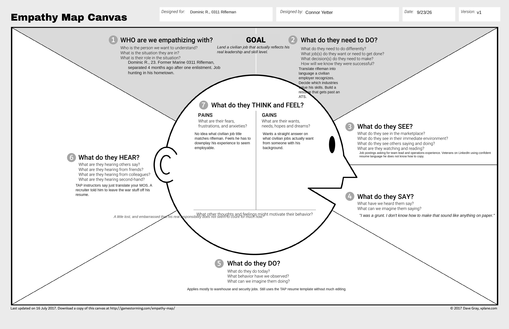
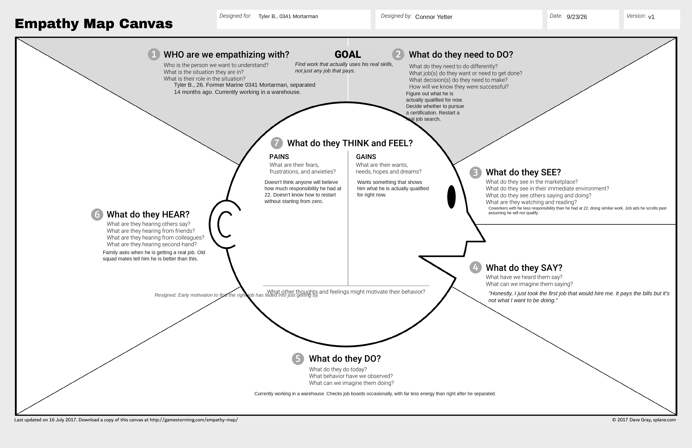
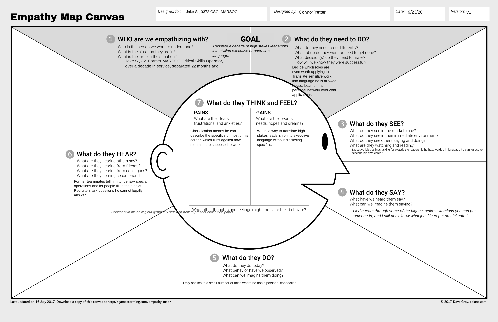
Key findings and conclusions
- The problem holds across the whole community. Every participant, regardless of MOS or seniority, struggled to translate their real responsibility into language civilians recognize.
- It does not get easier with experience. Senior special operators face classification on top of the same translation gap.
- A shared emotional thread: a feeling that military identity gets flattened or dismissed once the uniform comes off.
- Nobody had a real resource. Everyone relied on a generic TAP template, a relative, or guessing. None mapped their specific MOS to specific civilian titles or keywords.
- A distinct senior need: a way to describe high-level leadership and technical skill without disclosing specifics.
Define: State Your Users' Needs and Problem
One persona and one business model, both built from what the five participants actually said.
Persona
I laid all five empathy maps side by side and looked for overlap in what participants said, thought, did, and felt. Dominic, Ethan, and Tyler, who separated within the last 4 to 14 months, formed the dominant cluster: early in transition, underemployed relative to their skill, and stuck on generic templates with no feedback. Marcus and Jake surfaced a secondary need, describing high-level experience without disclosing sensitive specifics. Rather than split that into a second persona, I folded it into this persona's needs and into the value proposition. Derek Monroe is a composite of their words, pains, and goals. He is not any single participant.
"I don't want a job that just hires veterans. I want a job that needs what I actually did."
Bio
Derek led a machine gun team through two deployments, responsible for the safety, readiness, and performance of three to five Marines and hundreds of thousands of dollars of equipment. Nine months out, he has applied to dozens of jobs with almost no response. He knows he has real leadership and technical experience. He cannot find the words that make a hiring manager or an ATS see it.
Goals
- Get his resume past the first ATS scan and in front of a person
- Find a civilian title and industry that fits, not just the first thing that will hire him
- Stop downplaying the intensity of his role
- Explain his experience in interviews in a way that lands
Frustrations
- Jargon like "machine gunner" or "fire team leader" means nothing to civilians
- No resource maps his MOS to civilian titles or keywords
- Generic TAP templates and family advice miss his background
- Applying into a void with no feedback
Needs
- A tool that takes MOS, rank, and duties and outputs language civilians recognize
- Confidence the translation is accurate and credible, not keyword stuffing
- Something built around his specific experience, not a one-size-fits-all template
Business model canvas
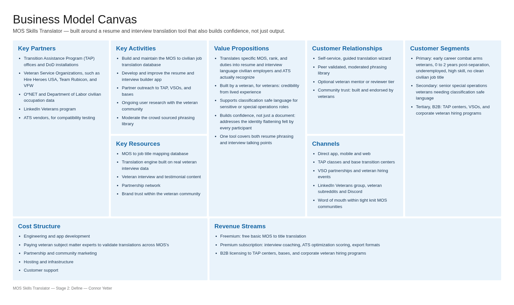
Key findings and conclusions
- The persona centers on the early career, high skill veteran because that is where the sample skewed and where the problem is most acute and most directly addressable without classification constraints.
- The senior and special operations nuance did not disappear. It was folded into the persona's needs and the value proposition as a secondary requirement.
- The business has to run through trusted veteran institutions (TAP, VSOs, veteran communities) rather than app store discovery, because trust, not awareness, is the real bottleneck.
- The core translation stays free at the point of need. Revenue comes from premium coaching and ATS scoring, and from B2B licensing, not from charging an underemployed veteran up front.
Ideate: Challenge Assumptions and Create Ideas
Go wide first, then pressure test every idea against Derek.
How I generated ideas
Before generating anything I wrote Derek's core need at the top of the page so every idea had to answer to it: get his experience understood by an ATS and a hiring manager without hiding or inflating what he did. I then used two techniques back to back. A mind map came first to get wide and organize the problem space. Walt Disney's Creative Strategy came second to pressure test the ideas by forcing three separate mindsets, one at a time.
Mind map
The problem sits in the center, with branches for how experience gets in, what comes out, trust and credibility, sensitive roles, confidence and identity, reach and business, and ideas beyond the resume. Some branches came straight from Stage 1 findings. Others, like matching a pasted job posting, only appeared once I let the map run past the obvious features.
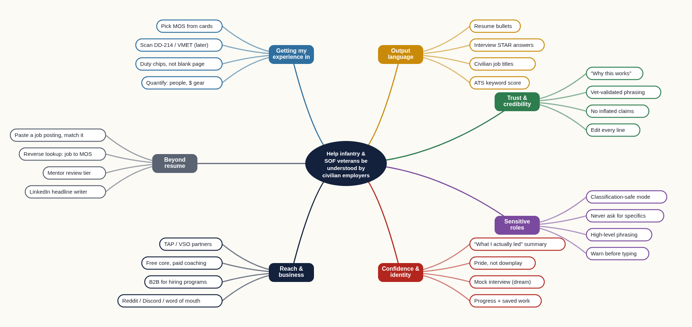
Walt Disney Creative Strategy
- Dreamer: no limits. What would the perfect tool do for Derek? This produced ideas like auto-filling a career from a DD-214 and an AI mock interviewer.
- Realist: what version of each dream can actually be built and trusted? "Writes my whole resume" became a four-step guided wizard. The AI interviewer became a later version.
- Critic: try to break every idea. This round produced the key design rules: stay truthful, never ask for sensitive specifics, and show the reasoning so veterans trust the output.
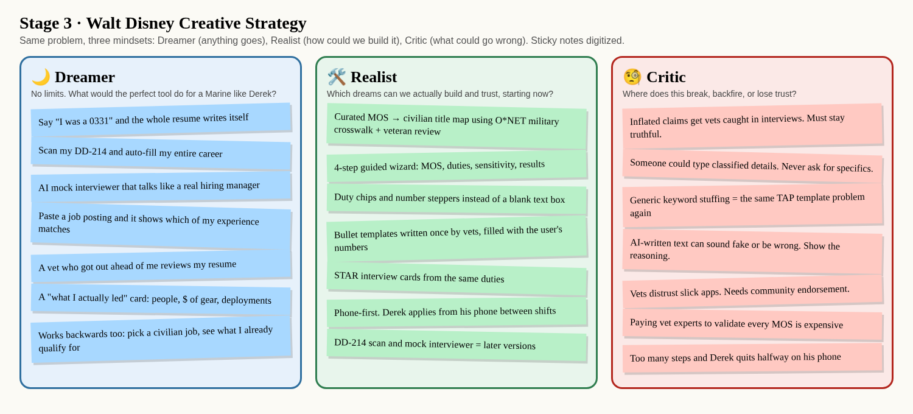
From ideas to a concept
I sorted every idea by value to Derek, effort, and trust risk. Several ideas were great for Derek but too heavy or too risky for a first version, so I deferred them deliberately instead of cutting them.
| Idea | Helps Derek | Effort | Trust risk | Decision |
|---|---|---|---|---|
| Guided wizard: MOS, duties, sensitivity | Very high | Low | Low | Build now |
| Duty chips plus numbers (people led, gear value) | Very high | Low | Low | Build now |
| Resume bullets from vet-written templates | Very high | Medium | Medium (must stay truthful) | Build now |
| "Why this works" on every line | High | Low | Reduces risk | Build now |
| Classification-safe language mode | High (senior and SOF) | Low | Reduces risk | Build now |
| Interview STAR cards | High | Medium | Low | Build now |
| Civilian job titles with match score | High | Medium | Medium | Build now |
| ATS keyword score | Medium | Low | Medium | Build now (simple) |
| Paste a job posting and match it | High | High | Medium | Later |
| DD-214 / VMET scan to auto-fill | Medium | High | High (privacy) | Later |
| AI mock interviewer | Medium | High | High (hallucination) | Later |
| Vet mentor review tier | Medium | High | Low | Later (premium) |
Key findings and conclusions
- The best ideas remove typing and blank-page anxiety. Derek applies from his phone between shifts, so tapping choices beats writing from scratch.
- Trust is the feature. A translation that sounds inflated or generic fails the same way a TAP template does, so "Why this works" and full editability are core.
- Sensitivity needed its own design answer: one toggle plus a warning, instead of a second app.
- Scope discipline matters. Ideas that depend on document scanning or free-text generation carry the highest privacy and accuracy risk, so they wait until the core translation is proven in testing.
Prototype: Start to Create Solutions
Sketch to settle the flow cheaply, then build something a user can actually tap.
Low-fidelity sketches
I sketched the six screens that carry the core task. Sketching first changed three decisions before any visual design existed: a dropdown became tappable MOS cards so there is no typing, saved progress moved onto the home screen so Derek can resume in one tap, and classification-safe language became an off-by-default toggle with a plain-language warning.
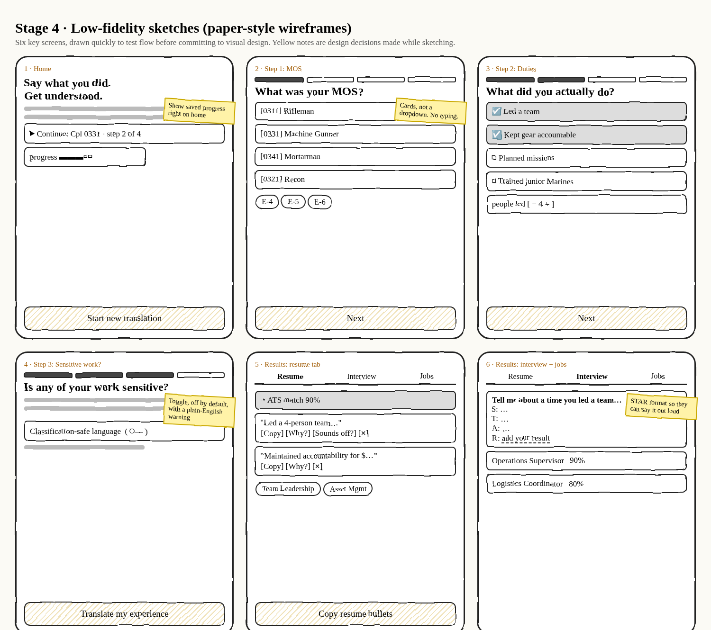
High-fidelity interactive prototype
The high-fidelity prototype is a working interactive build sized for a phone. A tester can choose an MOS and duties and see their own choices reflected in the output. It is the version I will put in front of users in Stage 5. Adobe XD is no longer being developed, and the assignment allows Figma or an equivalent interactive prototype.
Try it
- Tap Start a new translation.
- Choose an MOS and rank.
- Tap the duties that apply. Try tapping Next with none selected to see the error message.
- Turn on classification-safe language, then translate.
- Explore the Resume, Interview, and Job titles tabs. Tap Why this works, edit a line, or remove one and undo.
Screens
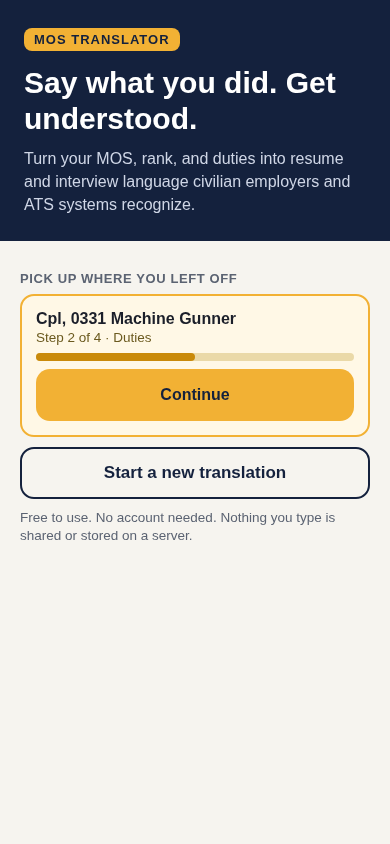
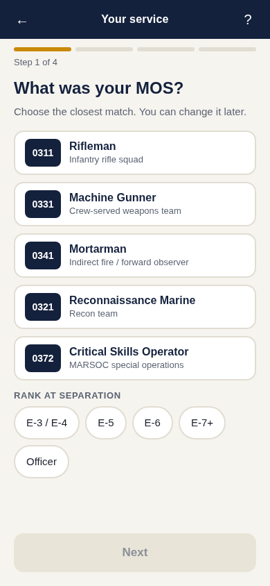
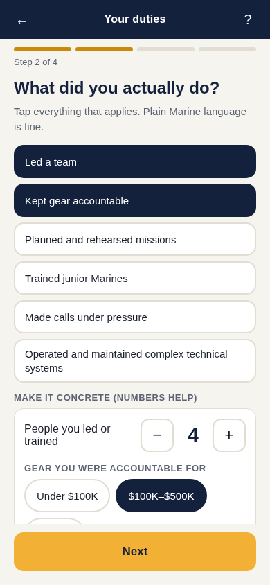
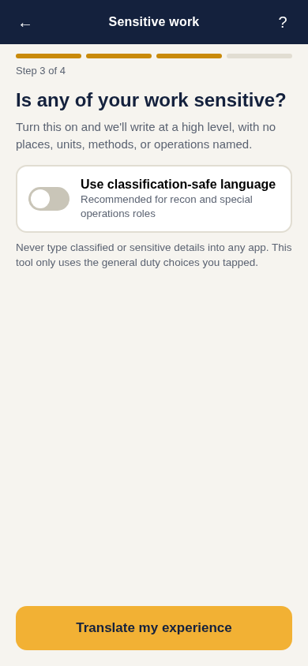
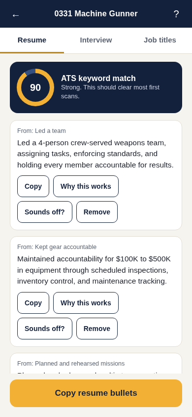
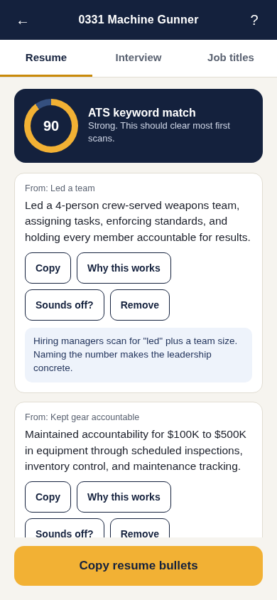
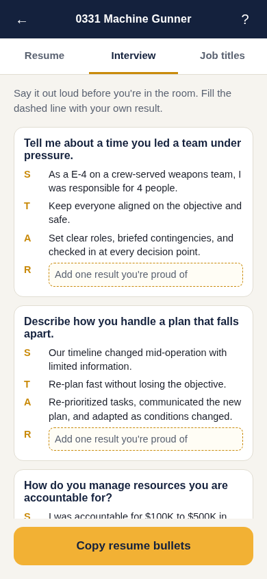
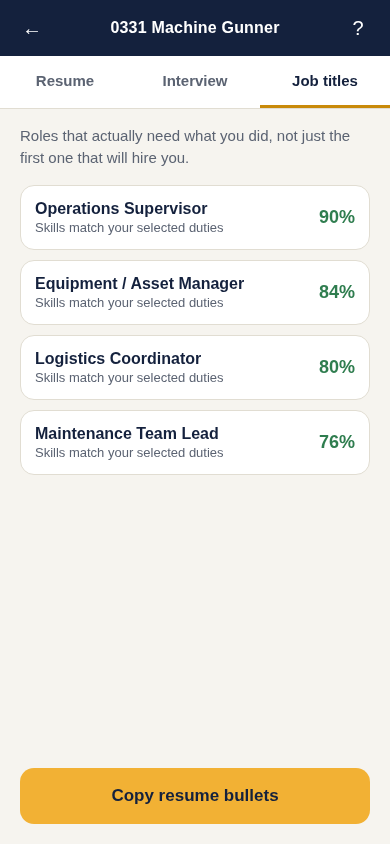
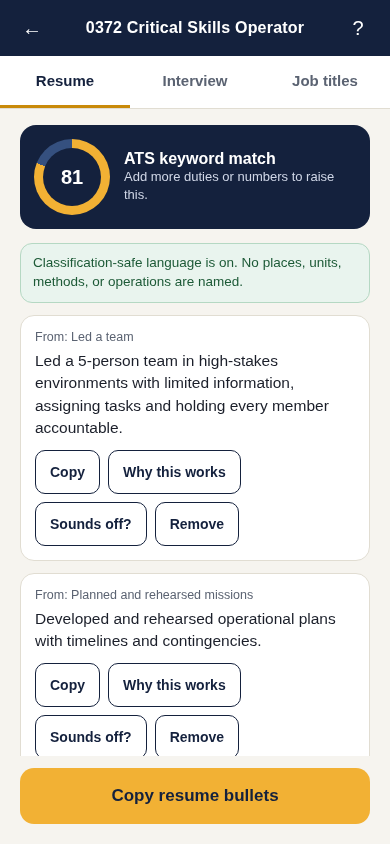
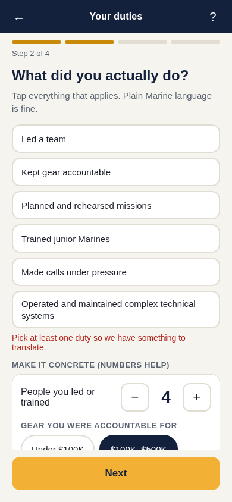
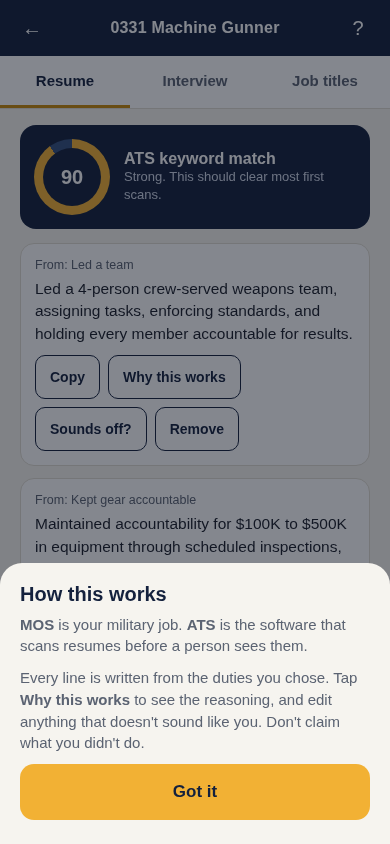
The 10 usability heuristics
Every one of Nielsen's 10 heuristics is applied somewhere in the prototype. The figure marks where on the screens, and the table explains how.
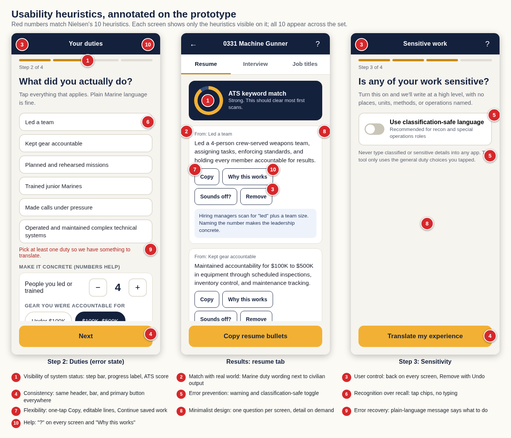
| Heuristic | How I applied it |
|---|---|
| 1. Visibility of system status | A four-segment progress bar with "Step X of 4", a loading skeleton while translating, a live ATS score ring, and a confirmation toast when copying. |
| 2. Match between system and the real world | Duties are in Marine language ("Kept gear accountable") and every output line shows "From:" the original duty beside the civilian wording. The help sheet defines MOS and ATS. |
| 3. User control and freedom | A back arrow on every screen, a 5-second Undo after removing a line, editable text, and a way back from results to edit duties. |
| 4. Consistency and standards | The same header, stepper, bottom amber primary button, and chip and card styles on every screen. Tabs, toggles, and bottom sheets follow common mobile patterns. |
| 5. Error prevention | Next is disabled until an MOS is chosen. The sensitivity screen warns never to type classified details, and classification-safe mode removes places, units, and methods before output is written. |
| 6. Recognition rather than recall | MOS cards, rank chips, and duty chips replace recalling terms and typing. Earlier selections persist when navigating back. |
| 7. Flexibility and efficiency of use | One-tap Continue for saved progress, Copy on one line or all lines, and every line editable for experienced users who want their own wording. |
| 8. Aesthetic and minimalist design | One question per screen, a plain background, and a single highlighted action. Detail such as the reasoning behind a line stays hidden until asked for. |
| 9. Help users recognize, diagnose, and recover from errors | Tapping Next with no duty selected shows a plain sentence in red: "Pick at least one duty so we have something to translate." A "Sounds off?" menu lets users flag lines that are too inflated, too vague, or worded wrong. |
| 10. Help and documentation | A "?" button on every screen opens a short plain-language sheet, and "Why this works" explains each line in context. |
UX laws applied
I applied seven laws deliberately. The first four shaped the main flow, and the last three shaped the results screen.
| Law | Principle | How I applied it |
|---|---|---|
| Hick's Law | More choices increase decision time. | One decision per screen. MOS limited to a handful of cards, duties limited to six chips, and sensitivity a single toggle. |
| Fitts's Law | Large, close targets are faster to hit. | Every tappable item is at least 48 px tall. The primary button is full width and anchored at the bottom where a thumb rests. |
| Doherty Threshold | Feedback under about 400 ms keeps users engaged. | Taps respond instantly. A skeleton loading state covers the short translation wait so the app never feels frozen, and the full wait is under one second. |
| Zeigarnik Effect | People want to finish incomplete tasks. | The home screen shows a progress card ("Step 2 of 4") with Continue, and the segmented bar shows how close he is to done. |
| Miller's Law | Working memory holds about seven items. | Six duty chips, one idea per bullet card, and a short grouped keyword set. |
| Jacob's Law | Users prefer apps that work like ones they know. | Derek already uses LinkedIn and Indeed on his phone, so I used familiar patterns: tabs for results, chips for choices, bottom sheets for help, toggles for settings. |
| Von Restorff Effect | The item that differs is remembered. | The amber primary button and the dark ATS score card are the only high-contrast elements on their screens, so the next action and key result stand out. |
Key findings and conclusions
- Sketching first paid off. Three structural decisions were settled in minutes instead of being discovered after visual design.
- "Why this works" and editable lines are what separate this from a generic template, and they appear on every translated line.
- Classification-safe mode works as an output setting rather than a separate flow, which keeps the app simple for junior Marines and still serves recon and special operations users.
- Quantification inputs (people led, gear value) change the output quality the most, because numbers make bullets read like real leadership experience.
Stage 5: Test
I will recruit five veterans to complete the same three tasks on the prototype: build a translation for their own MOS, remove and restore a line, and find a matching civilian job title. I will record time on task, errors, and a 1 to 5 trust rating of the output, then analyze it in Python (mean, standard deviation, and a graph, with a paired comparison if I test a second design variant). The prototype is already structured so those measures can be compared across participants.